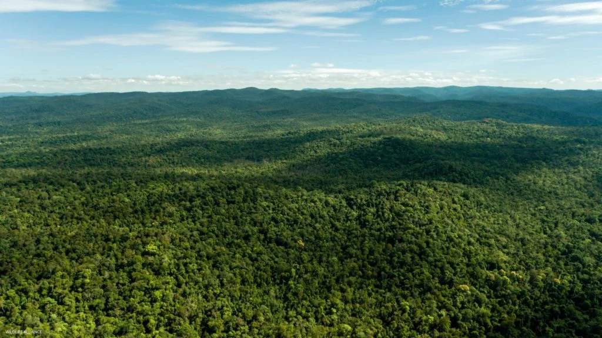
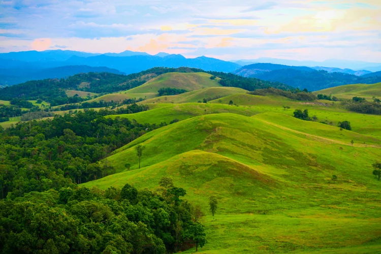
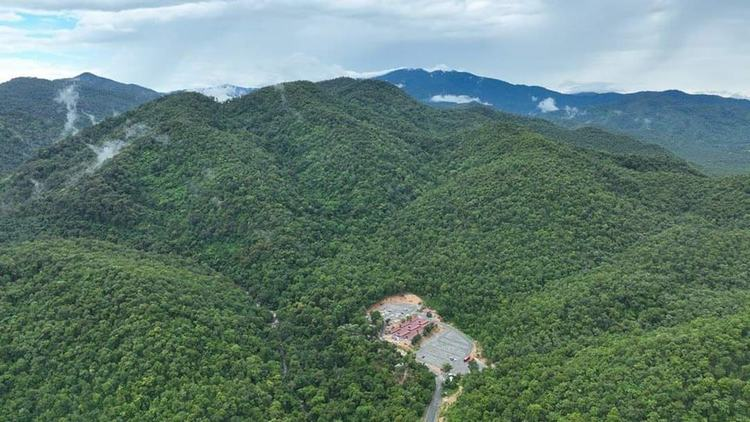
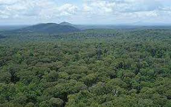

យើងប្រើប្រាស់វិធីសាស្ត្រចម្រុះ និងទំនើបកម្មដើម្បីធានាបាននូវប្រសិទ្ធភាពខ្ពស់ក្នុងការអភិរក្ស។
ការចុះល្បាតផ្ទាល់ដោយក្រុមការងារជំនាញ និងសហគមន៍មូលដ្ឋាន ដើម្បីទប់ស្កាត់ការកាប់បំផ្លាញ និងការបរបាញ់ខុសច្បាប់។
សហការយ៉ាងជិតស្និទ្ធជាមួយអាជ្ញាធរមានសមត្ថកិច្ច ដើម្បីអនុវត្តច្បាប់ស្តីពីព្រៃឈើ និងតំបន់ការពារធម្មជាតិឱ្យបានតឹងរ៉ឹង។
ប្រើប្រាស់ដ្រូន ផ្កាយរណប និងប្រព័ន្ធ GPS ដើម្បីតាមដានការប្រែប្រួលនៃផ្ទៃដីព្រៃឈើក្នុងពេលជាក់ស្តែង និងមានភាពសុក្រឹត។
ពង្រឹងសមត្ថភាព និងផ្តល់អំណាចដល់សហគមន៍មូលដ្ឋានឱ្យក្លាយជាម្ចាស់ការក្នុងការការពារ និងគ្រប់គ្រងធនធានធម្មជាតិ។
យើងជឿជាក់ថាបច្ចេកវិទ្យាគឺជាជំនួយការដ៏សំខាន់ក្នុងការការពារព្រៃឈើ។ យើងប្រើប្រាស់ប្រព័ន្ធ SMART (Spatial Monitoring and Reporting Tool) ដើម្បីគ្រប់គ្រងទិន្នន័យល្បាត និងកំណត់តំបន់ដែលប្រឈមនឹងហានិភ័យខ្ពស់។
យើងផ្តោតសំខាន់លើតំបន់ដែលមានជីវចម្រុះខ្ពស់ និងប្រឈមនឹងហានិភ័យខ្លាំងបំផុត។

ជួរភ្នំក្រវាញ គឺជាតំបន់ព្រៃភ្លៀងត្រូពិចធំមួយនៅភាគនិរតី កម្ពុជា ដែលមានជីវចម្រុះខ្ពស់ និងជាជម្រកសត្វកម្រ ដូចជា ដំរីអាស៊ី និងខ្លាឃ្មុំ។
ស្វែងយល់បន្ថែម
ឧទ្យានជាតិវីរជ័យ គឺជាតំបន់ព្រៃភ្នំធំមួយនៅភាគឦសាននៃ កម្ពុជា ដែលមានព្រៃភ្លៀងត្រូពិចសម្បូរបែប និងជាជម្រកសត្វព្រៃកម្រ។
ស្វែងយល់បន្ថែម
ភ្នំឱរ៉ាល់ គឺជាតំបន់ភ្នំខ្ពស់បំផុតនៅកម្ពុជា ដែលមានព្រៃធម្មជាតិសម្បូរបែប និងជាតំបន់អភិរក្សសត្វព្រៃសំខាន់មួយនៅភាគនិរតី។
ស្វែងយល់បន្ថែម
ភ្នំព្រេច គឺជាតំបន់ជម្រកសត្វព្រៃស្ថិតនៅខេត្តមណ្ឌលគិរី នៃ កម្ពុជា ដែលមានព្រៃភ្នំធម្មជាតិ និងជាជម្រកសត្វព្រៃកម្រ ជាពិសេសដំរីអាស៊ី។
ស្វែងយល់បន្ថែម